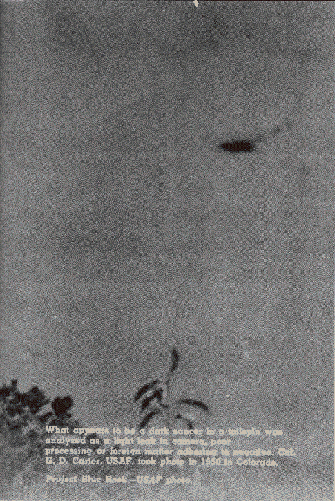
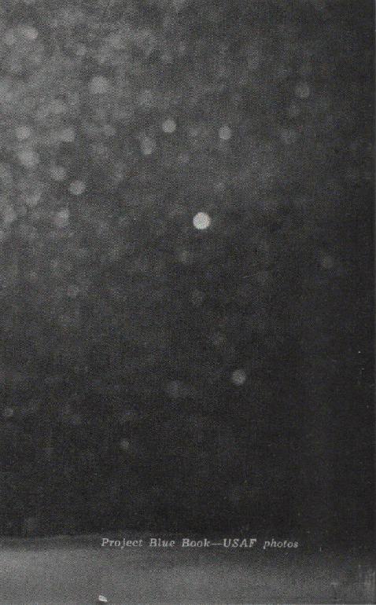

L'U.S. Air Force a examiné ces photographies avec attention et a pour diverses raisons décidé qu'elles ne
présentaient pas d'ovnis authentiques. Êtes-vous d'accord ?
Soumis comme ovni bonafide par Richard Miller de Denver, cette photo fut évaluée comme canular par les enquêteurs
de l'Air Force - peut-être parce que les riches détails lui donnent l'air de quelque chose du département prop de
la MGM [Projet Blue Book - USAF]
Ce qui semble être une soucoupe sombre dans a tailspin fut analysé comme une light leak in camera, poor processing
or foreign matter adhering to negative. Col. G. D. Carter. USAF, prit la photo en 1950 dans le Colorado [Projet Blue book - USAF]

"The Flying Worm" as this might be called, was actually a development flaw, Air Force experts decided. William
Presley soumis la photo pour analyse en Juillet 1947. Ele fut prise à Oak Ridge (Tennessee)[Projet Blue book - USAF]
Ces lumières jumelles streaked had all the experts baffled till someone discovered what it was : Misinterpretation
of conventional objects on the road. They are car lights. La photo fut soumise au Printemps de 1959 depuis
Coeburn (Virginie) [Projet Blue book - USAF].
Des réfractions centrales secondairs furent le verdict de cette photo du Long Island de 1966
Slits around moon are Astro/Arcturus said A.F. of Alice Lufkin's 1958 shot

Just the moon out of focus, experts said of John Deep's entry from Macon, Ga. Project Blue Book - USAF photo